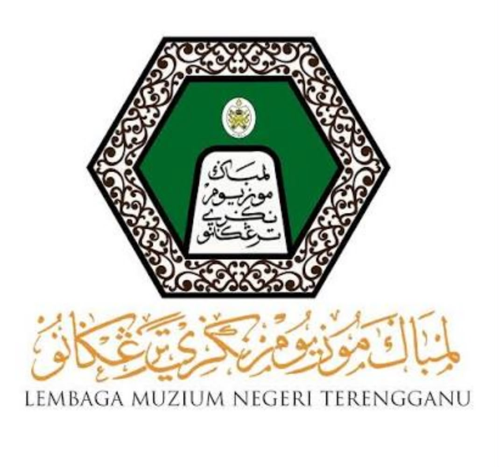

Lembaga Muzium Negeri Terengganu
Lembaga Muzium Negeri Terengganu merupakan antara institusi utama yang bertanggungjawab terhadap pengurusan dan pemeliharaan warisan sejarah negeri.
Antara peranannya ialah:
- Mengumpul, memelihara, menyimpan dan mempamerkan koleksi yang mempunyai nilai sejarah dan kebudayaan.
- Menjalankan penyelidikan berkaitan sejarah serta warisan negeri Terengganu.
- Menyediakan maklumat dan bahan pendidikan kepada masyarakat melalui pameran serta aktiviti muzium.
- Menggalakkan kesedaran masyarakat terhadap kepentingan warisan sejarah tempatan.
- Menyokong usaha pemeliharaan dan pemuliharaan monumen serta tempat bersejarah di Terengganu.
Melalui peranan tersebut, Lembaga Muzium Negeri Terengganu menjadi institusi penting dalam memastikan sejarah dan nilai warisan Batu Bersurat terus diketahui oleh masyarakat.